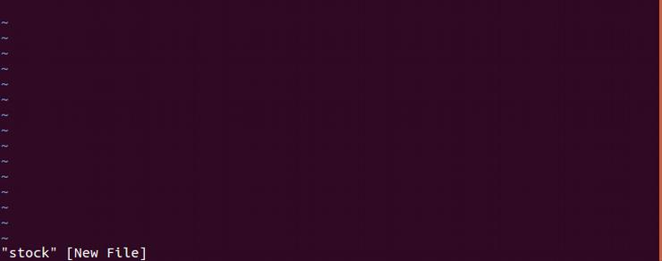
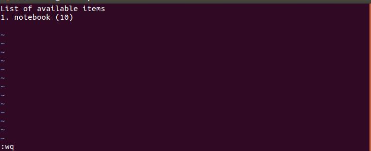
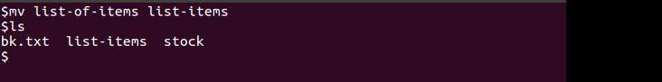
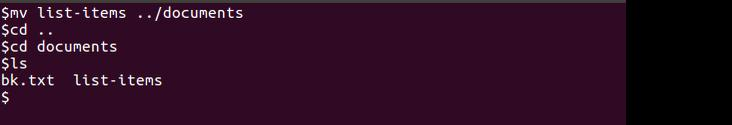

Objectives
1. Creation, deletion, updation, renaming of files
2. View and edit the contents of files
3. Using directories and files
- Duration: 15 min
- Exercises : 3
The Files
To list all the existing files and directories we use ls command. ls stands for listing.
ls command contains different switches. if add -l with the command it will display detail listing containging different type
of information like permissions, creation date and time and so on
What each column says
- First Column: represents file type and permission given on the file
- Second Column: represents the number of memory blocks taken by the file or directory.
- Third Column: represents owner of the file.
- Fourth Column: represents group of the owner.
- Fifth Column: represents file size in bytes.
- Sixth Column: represents date and time when this file was created or modified last time.
- Seventh Column: represents file or directory name.
ls -a shows all files and directories including hidden files and directories (The name of hidden files is started with .).
Creating a New Directory
To create a new directory we use mkdir command. mkdir stands for make directory. We will provide the name of the directory. Direcotry name should be meaningful.
To create a directory inside softwares directory we can write
Now we want to create Edit directory inside drawing directory which is itself inside softwares directory. What will happen?
$ mkdir softwares/drawing/Edit
It will throw an error because drawing directory does not exist inside softwares directory. To overcome we can use -p switch
$ mkdir softwares/drawing/Edit
Now it will create a directory drawing first and then create Edit directory inside drawing.
How to go inside a Directory
To go inside a directory use cd command. cd stands for change directory. we can go up at any level using cd command.
$ cd softwares
$ ls
Nothing will be displayed because it is an empty directory. To simplify our work we do not type the complete name
of the directory, instead after pressing a few first characters we use tab key to complete the name of the directory.
Home directory is the place from where you starts. whenever you log into the system you are at home directory. To access your home directory at any time you can use command
To go outside a directory use cd .. command.
To go at root level use cd command. If you are inside multiple directories, let suppose /user/documents/history/year16
then to go outside of all directories use cd command.
$ cd
alternatively you can use
$ cd ../../../..
Remember: In Unix dot (.) refer to current directory while double dot (..) refer to parent directory
$ mkdir books
$ cd books
$ mkdidr ebooks
$ cd ebooks
$ ls
How to Create a File
To create a file we need an editor. Several editors are provided with unix like nano, vi, vim etc. To open any editor just type the name
of the editor and then press enter. Each editor has different work environment. To create a file "stock" using vi editor the command will be as follows:
$ vi stock
This will open the vi editor window. A blank file with the name stock is opened in vi editor.

To write some text in file press insert and then write text

Some useful commands
- To go into text mode press insert
- To go into command mode press escape
- To delete one line press dd
- To delete one word press dw
- To save the file press escape + colon + w
- To quit the vi editor press escape + colon + q
- To save file and then quit press ZZ
- To discard changes and quit press :q!
How to Display Content of a File
To see the content of a file use cat command as follows. It will display the contents of the file on screen.
$ cat stock
List of available items
1. RAM
2. Notebook
3. Deskjet
What if the length of file exceeds then the length of screen
- The command less writes the contents of a file onto the screen a page at a time
- The head command writes the first ten lines of a file to the screen.
- The tail command writes the last ten lines of a file to the screen.
How to Name a File
We have some rules and conventions for naming files
-
Characters with special meanings such as / * & % , should be avoided
- Avoid using spaces within names
- The safest way to name a file is to use only alphanumeric characters, that is, letters and numbers, together with _ (underscore) and . (dot).
- File names conventionally start with a lower-case letter, and may end with a dot followed by a group of letters indicating the contents of the file
$ cd books/ebooks
$ vi index.txt
type some text in file and then save using :wq to display the contents of file write:
$ cat index.txt
Copy a File
To copy file use cp command. It requires two parameters, the name of the source file and the name of the destination file with complete path where you want to place the file. If path is not mentioned the file will be copied on the same location.
cp source-file destination-file
$ ls
stock
$ cp stock list-of-items
$ ls
stock list-of-items
To copy a file from some other location to the current directory, we give the complete path of source file. To indicate current directory we use period(.) Note that the file will be copied with the same name as source file. suppose we have two folders programs and documents. we are inside programs folder and we want to copy a file bk.txt in programs folder which is inside documents folder.
$ ls
pr1 pr2 run
$ cp ../documents/bk.txt .
$ ls
bk.txt pr1 pr2 run
Rename a File
To rename a file or move file from one location to another use mv command.
mv old-file new-file
To rename a file
$ mv list-of-items list-items

To change the location of a file
$ mv list-items ../documents/

Removing File and Directory
To remove a file use rm command. To remove an empty directory use rmdir command
Now try to remove the softwares directory using rmdir command. The output will be an error message
$ rmdir softwares
rmdir: failed to remove 'softwares': Directory not empty
we cannot delete an unempty directory using rmdir command
we can remove an unempty directory using -r flag with rm command
$ rm -r softwares
we cannot recover deleted files and directories which are deleted using rm or rmdir command.
$ cp index.txt ../list-of-contents.txt